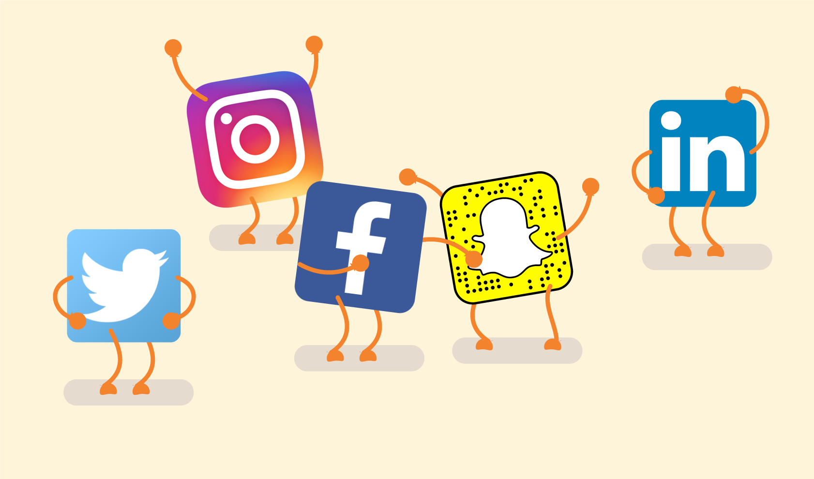

Las redes sociales, en el mundo virtual, son sitios y aplicaciones que operan en niveles diversos – como el profesional, de relación, entre otros – pero siempre permitiendo el intercambio de información entre personas y/o empresas.
Cuando hablamos de red social, lo que viene a la mente en primer lugar son sitios como Facebook, Twitter y LinkedIn o aplicaciones como TikTok e Instagram, típicos de la actualidad. Pero la idea, sin embargo, es mucho más antigua: en la sociología, por ejemplo, el concepto de red social se utiliza para analizar interacciones entre individuos, grupos, organizaciones o hasta sociedades enteras desde el final del siglo XIX.
En Internet, las redes sociales han suscitado discusiones como la de falta de privacidad, pero también han servido como medio de convocatoria para manifestaciones públicas en protestas. Estas plataformas crearon, también, una nueva forma de relación entre empresas y clientes, abriendo caminos tanto para la interacción, como para el anuncio de productos o servicios.

Estas plataformas están dirigidas a todo tipo de usuarios, sin una temática definida o interés común. La gente accede a ellas con el fin de interactuar, comunicarse u opinar sobre cualquier asunto. También son conocidas como redes sociales generalistas.
Algunas de las redes sociales horizontales más conocidas y utilizadas son:
Estas plataformas están caracterizadas por la especialización de un tema en concreto, ya sea música, trabajo, moda, etc… Por lo tanto, llegan a grupos sociales delimitados por la temática en concreto de dicha red social.
Algunas de las más destacadas en esta categoría son:
Aunque muchas veces las redes de mensajería son consideradas como redes sociales verticales, el auge de éstas en los últimos años merecen una clasificación aparte.
De hecho, en estos últimos años las apps de mensajería han sido capaces de derrotar medios de comunicación que parecían imbatibles, como los SMS.
Además, también están desplazando las llamadas y los correos electrónicos. Tanto es así, que redes sociales generalistas como Facebook han sacado su propia APP de mensajería -Facebook Messenger- para competir con el resto de plataformas de mensajería.
Las redes sociales de mensajería más utilizadas y más comunes en España son:
Ya sea que explores nuevos mercados potenciales para tu negocio o solo busques nuevos canales para conectarte con tus clientes, hay muchos tipos de redes sociales que puedes usar. Algunas son bastante obligatorias para cualquier negocio; otras son útiles para una subdivisión más pequeña de nichos de negocios; y de algunas deberías alejarte totalmente. Sean cuales sean tus necesidades y objetivos, lo que es seguro es que encontrarás lo que estás buscando en alguna parte de las redes sociales.